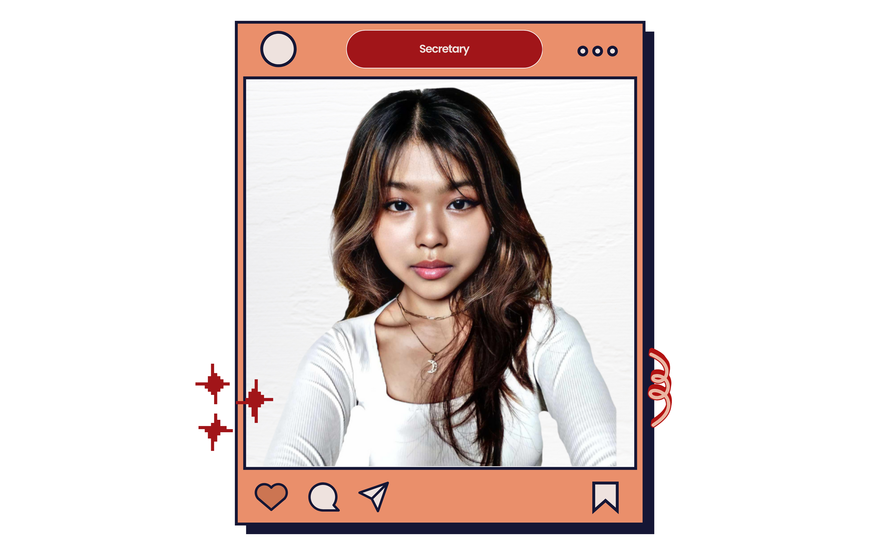

2024 - 2025
About Me

Cassandra De Guzman
Secretary
I believe that if your actions motivate others to dream more, learn more, and do more, you are a great leader.
- With High Honors in S.Y. 2022-2023 (Grade 10)
- Best in Front Office Services (T.L.E Subject) during S.Y. 2022-2023 (Grade 10)
- Best in Araling Panlipunan in S.Y. 2022-2023 (Grade 10)
- Rank 2 (Grade 10)
- President for 3 consecutive years
- Won Rank 3 in Spelling Bee: Filipino Category (Division Level)
- With High Honors (1st Semester & 2nd Semester, S.Y. 2023-2024) (Grade 11)
- Former P.I.O of English Language Society (Grade 11)
- Division Schools Press Conference (DSPC) Qualifier — Science and Technology Category (Grade 11)
